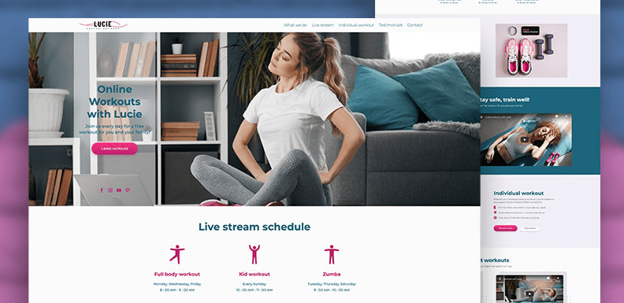

Detalles del Proyecto: Rediseño de Blog Personal "CodeJourney"

Este proyecto se centró en la **actualización y modernización** de la interfaz de usuario (UI) y la experiencia de usuario (UX) de un blog personal existente. El objetivo fue mejorar la legibilidad, la navegación y la estética general del sitio para atraer a una audiencia más amplia y retener a los visitantes.
Mejoras Implementadas:
- Diseño Responsivo: Reorganización completa del diseño para adaptarse fluidamente a dispositivos móviles y de escritorio.
- Tipografía Mejorada: Selección de fuentes modernas y optimizadas para una mejor legibilidad del contenido.
- Navegación Intuitiva: Reestructuración del menú y adición de categorías para facilitar el acceso a los artículos.
- Optimización de Imágenes: Compresión y optimización de todas las imágenes para una carga más rápida del sitio.
- Estilos de Artículo: Creación de estilos claros y atractivos para los bloques de código, citas y listas dentro de los posts.
Tecnologías Utilizadas:
El rediseño fue llevado a cabo utilizando HTML5 para la semántica, CSS3 para un diseño visual completamente nuevo, incluyendo animaciones sutiles y transiciones. Se empleó **JavaScript** para funcionalidades menores como un botón de "volver arriba" y la carga diferida de algunas imágenes.